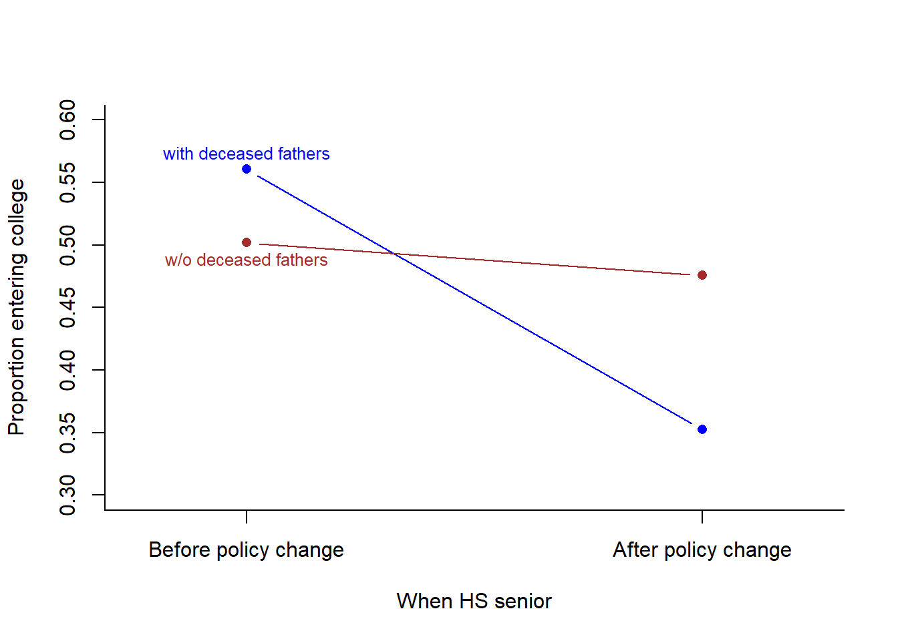
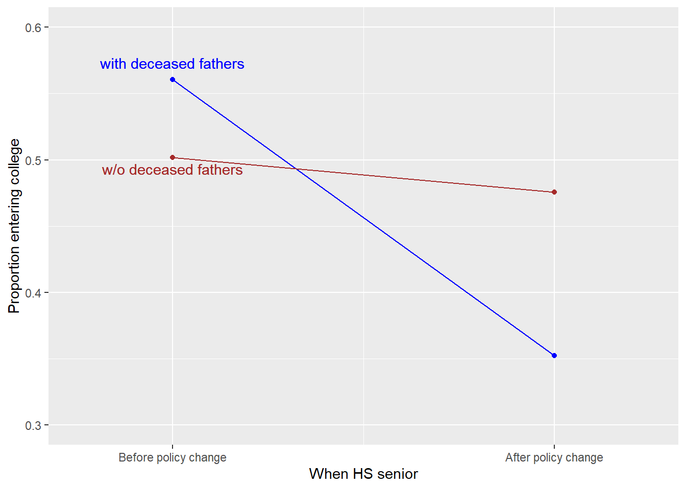
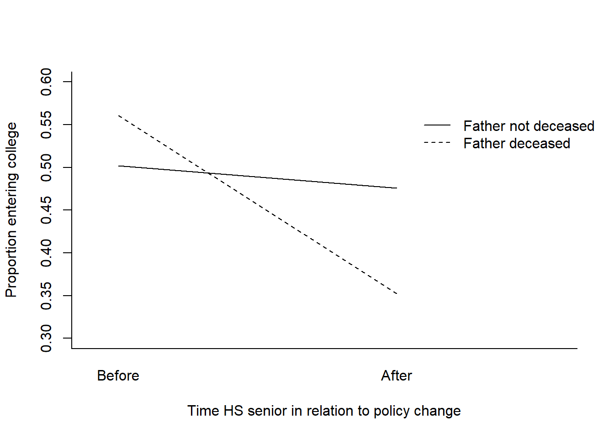
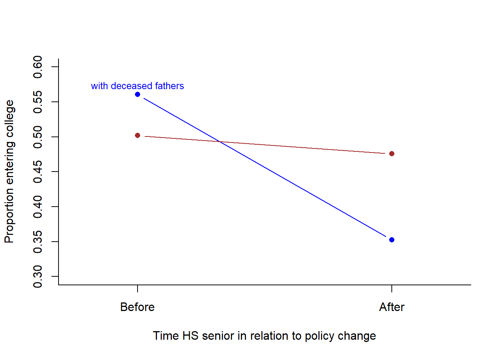
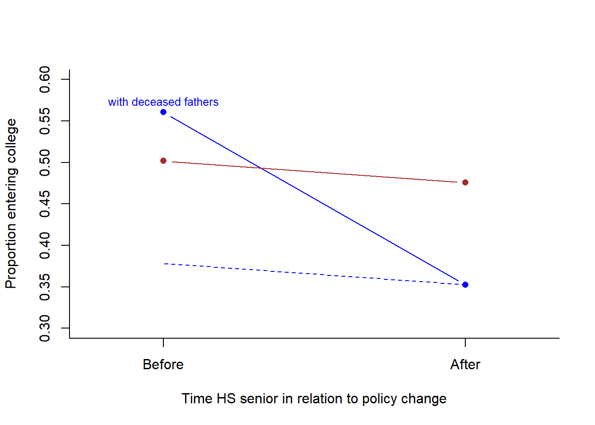
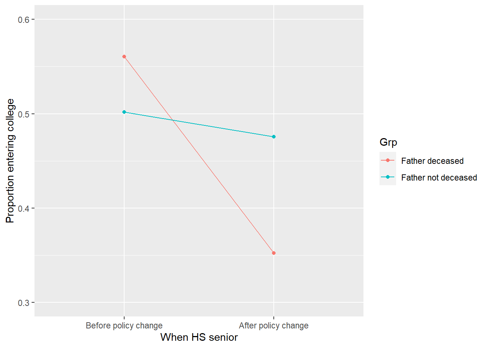
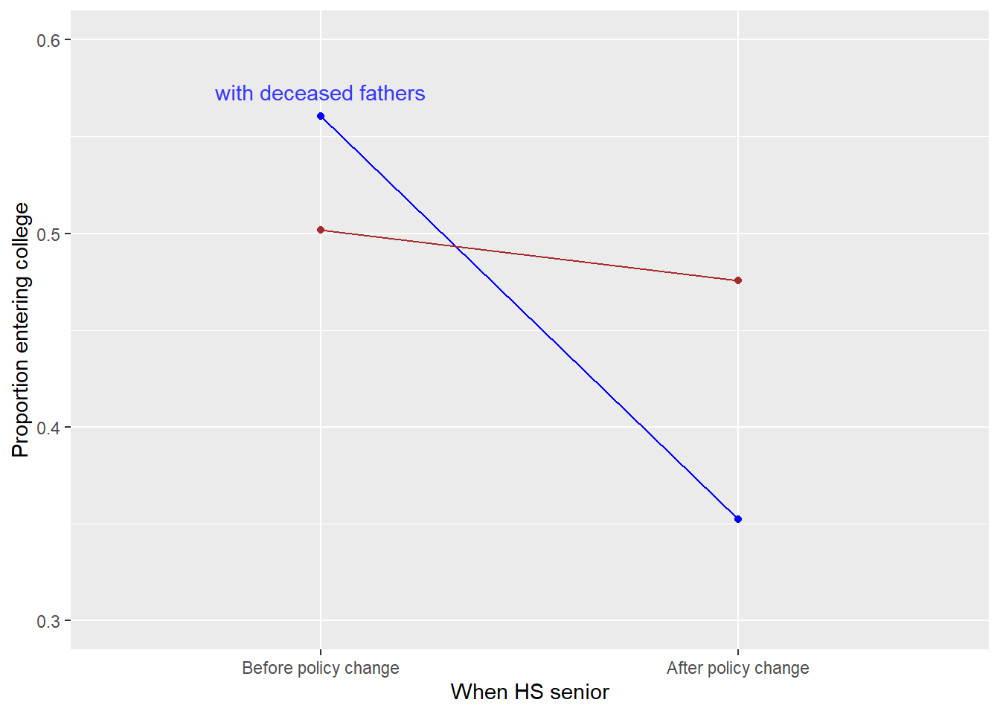
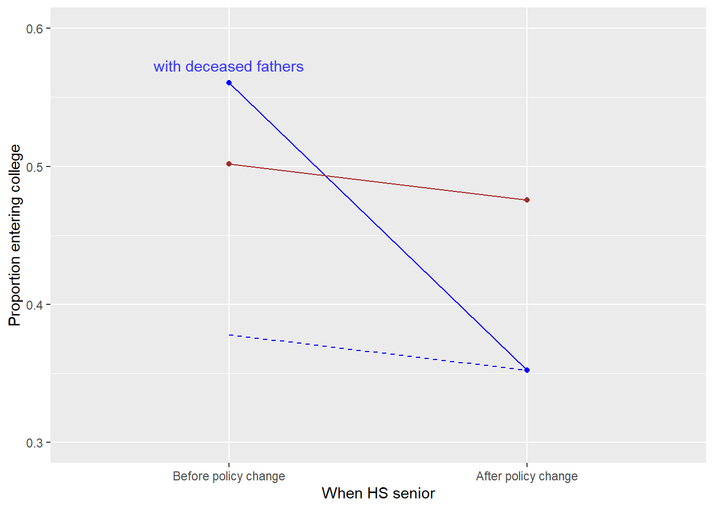
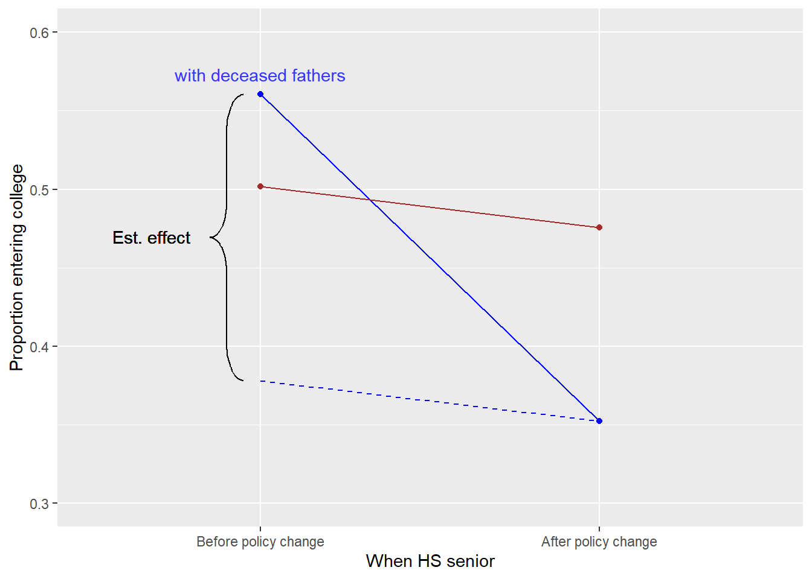

Part 5 Difference in Differences
Chapter 8 of Murnane and Willett (2011) provides several examples of studies that estimated effects from existing data. Because the exogenous shocks in these studies were not planned by the researcher but were due to other conditions such as policy, these are classified as natural experiments. They use data from Dynarsky’s (2003) research to provide examples of how we estimate effects using a difference-in-differences strategy. The data were originally from National Longitudinal Survey of Youth (NLSY), which used cluster sampling, so we are working with sampling weights to get accurate estimates of the standard errors.27 For this, we will use the survey package (Lumley, 2021). We will also use the poliscidata package (Edwards & Pollock, 2020) to get the r-squared estimates from the output provided by the survey package, all in an effort to show how we can obtain the output that the authors provide in Chapter 8.
5.1 Objectives
- Use the survey package (Lumley, 2021) to account for survey weights that are provided in existing data.
- Use a difference-in-differences (DID) strategy to estimate effects.
5.2 Import and Prepare the Data
Let’s import the data and save it an object that we’ll call dyn.
dyn <- read.csv("Ch 08 Dynarsky.csv")
str(dyn)## 'data.frame': 3986 obs. of 8 variables:
## $ id : int 9 14 15 21 22 24 26 28 31 35 ...
## $ hhid : int 9 13 15 20 22 23 26 27 31 34 ...
## $ wt88 : int 691916 784204 811032 644853 728189 776590 610234 718671 116805 574554 ...
## $ coll : int 1 1 1 1 1 0 1 0 0 1 ...
## $ hgc23 : int 13 16 16 16 16 12 14 12 12 13 ...
## $ yearsr : int 81 81 82 79 80 79 80 82 82 81 ...
## $ fatherdec: int 0 0 0 0 0 0 0 0 0 1 ...
## $ offer : int 1 1 0 1 1 1 1 0 0 1 ...Here is a description of the data frame’s contents:
idis the case ID.hhidis the NLSY cluster ID. This household identification number accounts for households that have more than one student in the sample (“hh” stands for “household”).wt88is the sampling weight for each case. Larger numbers are for stronger weights, where the student represents that many people in the population who are like them.collstands for college, with \(1\) = Full-time college student by age 23 and \(0\) otherwise. This is an outcome variable.hgc23seems like years of schooling by age 23. We won’t use this variable.yearsris the year in which the student was a senior. This is used to create our forcing variable,offer(andbefore).fatherdecis a dummy variable set as \(1\) = Father deceased by age 18 and \(0\) for otherwise.offeris specified as $1 = $ Offered the SSSB aid or the General Scholarship Loan (GSL), and $0 = $ for not provided the offer, which comes from theyearsrvariable, where 1979–1981 are \(1\) and 1982–1983 are \(0\). In the original data,offerwas also provided to students whose fathers were classified as disabled or retired.
The causal claim being investigated is whether the offer of a scholarship (the SSSB) increased college attendance.
5.2.1 Prepare the data
Instead of using the offer forcing variable, which includes students not only with deceased fathers but also with fathers who were classified as disabled or retired social-security beneficiaries, let’s use fatherdec variable in conjunction with a new forcing variable, which we’ll call before. By restricting the offer to students with deceased father, we are (or rather Dynarsky was) strengthening the argument that the offer of treatment was exogenous to any other variables (such as fathers retiring early to ensure their child received the scholarship).
Let’s code this new forcing variable as \(1\) if yearsr is 1979–1981 and \(0\) otherwise, for 1982–1983).)28
dyn$before <- ifelse(dyn$yearsr < 82, 1, 0) We can check n-size of the fatherdec vs. the year in which the student was a senior:
(mytable <- with(dyn, table(fatherdec, yearsr) ))## yearsr
## fatherdec 79 80 81 82 83
## 0 892 986 867 828 222
## 1 41 44 52 41 13Let’s see what the proportions are, by row, which was the first argument in the table() function above, fatherdec. The margin = 1 specifies to calculate the proportions of the sum of that margin, such as \(\frac{\text{mytable[2,1]}}{\text{sum(mytable[2, ])}} = \frac{41}{191} = 0.21\).
round(prop.table(mytable, margin = 1), 2) ## yearsr
## fatherdec 79 80 81 82 83
## 0 0.24 0.26 0.23 0.22 0.06
## 1 0.21 0.23 0.27 0.21 0.075.3 Using the survey package
Let’s see how the survey package works. For this part, we’ll use the full set of data, including students whose fathers were not deceased. Here’s some of the code we will use:
library(survey)
mydesign <- svydesign(id = ~hhid, weights = ~wt88, data = dyn)
summary(mydesign) # This is to verify the design.
(mymean <- svymean(~ coll,mydesign))
regres <- svyglm(coll ~ before,mydesign)
summary(regres)Let’s break this down. We first create a survey design object using the svydesign() function.
mydesign <- svydesign(id = ~hhid, weights = ~wt88, data = dyn)In this data set, the hhid column represents the clusters that were sampled (households), so the id = ~ hhid tells the survey package that the primary sampling unit is this variable. After this, it automatically considers each row to be a sampling element (students in this case; there may be more than one student in a household). The weights = argument specifies which variable to use as the sampling weight. The data = argument specifies which object is the data frame. The ~ in this coding is not a formula operator; instead, it tells the svydesign() function to look for the object as a column in the data frame (e.g., ~hhid is in the data frame as dyn$hhid).
After creating this survey design object, we use it with one of the survey package’s functions. Let’s calculate the mean. The svymean() function is part of the survey package. It asks for the variable and the design. The design is what we just created, and it includes the data and the weights.
(mymean <- svymean(~ coll, mydesign)) ## mean SE
## coll 0.49435 0.0105We see that overall, 49% of the students attended college.
Let’s fit a linear regression model. Here, we’ll use the package’s svyglm() function, which is analogous to Base R’s glm() function for the general linear model. We’re regressing coll on before. In this function, the ~ is now the formula operator. We also include the design object, which of course includes the data and the weights.29
myregress <- svyglm(coll ~ before, mydesign)
summary(myregress)##
## Call:
## svyglm(formula = coll ~ before, design = mydesign)
##
## Survey design:
## svydesign(id = ~hhid, weights = ~wt88, data = dyn)
##
## Coefficients:
## Estimate Std. Error t value Pr(>|t|)
## (Intercept) 0.47081 0.01842 25.561 <2e-16 ***
## before 0.03323 0.02073 1.603 0.109
## ---
## Signif. codes: 0 '***' 0.001 '**' 0.01 '*' 0.05 '.' 0.1 ' ' 1
##
## (Dispersion parameter for gaussian family taken to be 0.2498028)
##
## Number of Fisher Scoring iterations: 2In the overall population—before restricting this to our analytic sample—being a HS senior before the cut-off has no predictive effect on whether students attend college. So, this there is no detectable statistically significant difference in college attendance when we compare students graduating in years 1979–1981 with students graduating in 1982–1983. This suggests that if there is a “secular trend” that is additive to the effects of the SSSP removal, the effect is not strong enough to be detected. We don’t know, however, if there is a secular trend that is dampening the effect of the SSSP “treatment.” Using a DID strategy will help us.
5.4 Direct estimates, as shown in Table 8.1 on page 143
5.4.1 First difference, direct estimate in Panel A.
Part of this demonstration is to see the rationale underlying the difference-in-differences strategy. The code in this section is not what we would actually use when we use a difference-in-differences strategy.
If we naively believed that no other variables could cause the changes in the outcome variable (college entry by the age of 23), we would simply examine the difference between these two groups of students whose fathers were deceased: Those before the cutoff and those after.
With this, let’s restrict our analysis to the subset—the students whose fathers had deceased. This is the population for whom the causal claims can apply to. Let’s create a subset of the data, so it is restricted to persons whose fathers were deceased.
dyn.d <- subset(dyn, fatherdec == 1)Let’s create a survey design object, design.d with this new data set. Then, let’s calculate the mean and the standard error of the mean of each of these two groups. In this direct approach, we want the difference, \((D = D_{\text{before policy}} - D_{\text{after policy}})\), and the standard error of this difference.
To get the mean and standard errors, let’s use the svyby() and svymean() functions from the survey package. svyby() does the same thing that the by() function does in Base R. The first argument is the column in the data on which we perform the function; the second argument specifies the by variable; the last two include the design and the function.
library(survey)
design.d <- svydesign(id = ~hhid,
weights = ~wt88,
data = dyn.d)
(dc <- svyby(~coll, by = ~before, design = design.d, FUN = svymean))## before coll se
## 0 0 0.3522178 0.08146871
## 1 1 0.5604556 0.05288942We now have an object, dc to extract data from. Here’s the code we’ll use to extract and save the means and standard errors of each group:
m.dc <- dc["0","coll"]
m.dt <- dc["1","coll"]
se.dc <- dc["0","se"]
se.dt <- dc["1","se"]We can use these to calculate the estimate of the group difference and pooled standard error.
(direct.diff <- m.dt - m.dc)## [1] 0.2082378(direct.se <- sqrt(se.dt^2 + se.dc^2))## [1] 0.09713106Now that we have these, we can directly estimate the test statistic.
(direct.t <- (direct.diff/direct.se)) # t reported in Table 8.1(A)## [1] 2.143885Using the pt() function with the test statistic and the degrees of freedom (which is the number of rows in this subset of data minus 1), we can estimate the one- and two-tailed p-values, the latter being twice as big.
direct.df <- (nrow(dyn.d)-1) # df, needed for the pt() function
(p.one.sided.direct <- pt(-abs(direct.t), direct.df)) # p reported in Table 8.1(A)## [1] 0.01665654(p.two.sided.direct <- 2*pt(-abs(direct.t),direct.df))## [1] 0.03331307To make our work easier to summarize, we can save these to an object and give the columns names:
rslts <- round(c(direct.diff, direct.se, direct.t, p.one.sided.direct),3)
names(rslts) <- c("Est.", "S.E.", "t-stat", "p.one.sided")
rslts.direct <- data.frame(t(rslts))
rownames(rslts.direct) <-"Direct"
rslts.direct## Est. S.E. t.stat p.one.sided
## Direct 0.208 0.097 2.144 0.0175.4.2 Estimate from the linear-probability model (OLS) estimate shown in Table 8.1 on page 143, Panel B.
We can use the survey package design object we created above. Here it is again, along with the package’s version of the general linear model function, svyglm(). We can save and view the result.
library(survey)
design.d <- svydesign(id = ~hhid,
weights = ~wt88,
data = dyn.d)
regres.d <- svyglm(coll ~ before, design.d)
(out <- summary(regres.d))##
## Call:
## svyglm(formula = coll ~ before, design = design.d)
##
## Survey design:
## svydesign(id = ~hhid, weights = ~wt88, data = dyn.d)
##
## Coefficients:
## Estimate Std. Error t value Pr(>|t|)
## (Intercept) 0.35222 0.08147 4.323 2.61e-05 ***
## before 0.20824 0.09350 2.227 0.0273 *
## ---
## Signif. codes: 0 '***' 0.001 '**' 0.01 '*' 0.05 '.' 0.1 ' ' 1
##
## (Dispersion parameter for gaussian family taken to be 0.2423226)
##
## Number of Fisher Scoring iterations: 2Let’s get the one-sided p-value and R2 reported in Table 8.1(b).
offer.effect <- coefficients(out)[2,1]
offer.se <- coefficients(out)[2,2]
regress.t <- offer.effect / (coefficients(out)[2, 2])
regress.df <- out$df.residual
p.value.1sided <- pt(-abs(regress.t),regress.df)
p.value.2sided <- 2*pt(-abs(regress.t),regress.df)Here’s where we need the poliscidata package. This helps us get the R2 value from the survey package’s output:
library(poliscidata)
R2.out <- fit.svyglm(regres.d)
R2 <- R2.out[1]
rslts2 <- round(c(offer.effect, offer.se, regress.t,p.value.1sided, R2),3)
names(rslts2)<- c("Est.", "S.E.","t-stat", "p.one.sided", "R^2")
rslts.linp <- data.frame(t(unlist(rslts2)))
rownames(rslts.linp) <- "OLSregressn"
rslts.linp # p.Report with one-sided p-value## Est. S.E. t.stat p.one.sided R.2
## OLSregressn 0.208 0.094 2.227 0.014 0.036The regression approach assumes that the residual variances in the two groups, as defined by our forcing variable before are equal, which may not hold. However, a benefit to using regression over the direct estimate of the two means and standard errors is that we could add covariates to the model.
Note that these two approaches are not appropriate estimations of the causal effect of the scholarship program. There are likely other variables contributing to this difference. There may be a secular trend occurring. We could imagine a counterfactual group of students (with deceased fathers) who were not offered the scholarship when they were seniors in these three years (1979—1981) nor in the comparison years (1982—1983) and see if there is a change in the coll variable between those two groups. We don’t have access to this counterfactual group. But, to estimate this secular trend, we’ll use students whose fathers were not deceased and who were seniors in the same window of time.
5.5 Difference in differences, simple approach (Table 8.2, p. 157)
Let’s create a subset of data with students with non-deceased fathers:
dyn.n <- subset(dyn, fatherdec == 0)
dim(dyn.n)## [1] 3795 9str(dyn.n)## 'data.frame': 3795 obs. of 9 variables:
## $ id : int 9 14 15 21 22 24 26 28 31 38 ...
## $ hhid : int 9 13 15 20 22 23 26 27 31 37 ...
## $ wt88 : int 691916 784204 811032 644853 728189 776590 610234 718671 116805 544825 ...
## $ coll : int 1 1 1 1 1 0 1 0 0 0 ...
## $ hgc23 : int 13 16 16 16 16 12 14 12 12 12 ...
## $ yearsr : int 81 81 82 79 80 79 80 82 82 81 ...
## $ fatherdec: int 0 0 0 0 0 0 0 0 0 0 ...
## $ offer : int 1 1 0 1 1 1 1 0 0 1 ...
## $ before : num 1 1 0 1 1 1 1 0 0 1 ...Let’s use the survey package on this data set:
design.n <- svydesign(id = ~hhid,
weights = ~wt88,
data = dyn.n)
(nd <- svyby(~coll, by = ~before, design = design.n, FUN = svymean)) #Non-deceased (nd)
m.ndc <- nd["0","coll"]
m.ndt <- nd["1","coll"]## before coll se
## 0 0 0.4756935 0.01886508
## 1 1 0.5017016 0.01217362Here is the second difference to subtract secular effects (Eq. 8.5):
(n.direct.diff<- m.ndt - m.ndc)## [1] 0.02600809Here are the standard errors:
se.nc <- nd["0","se"]
se.nt <- nd["1","se"]Let’s subtract the second difference from the first difference.
(DID.est <- direct.diff-n.direct.diff) ## [1] 0.1822297(DID.se <- (sqrt(se.dt^2 + se.dc^2 + se.nt^2 + se.nc^2)))## [1] 0.09969218(DID.t <- (DID.est/DID.se))## [1] 1.827924DID.df <- nrow(dyn.n)-1
p.one.sided.DID <- pt(-abs(DID.t),DID.df)
rslts.DID <- round(c(DID.est,DID.se, DID.t, p.one.sided.DID),3)
names(rslts.DID)<- c("Est.", "S.E.","t-stat", "p.one.sided")
report.DID<- data.frame(t(unlist(rslts.DID)))
rownames(report.DID) <- "SimpleDID"
report.DID## Est. S.E. t.stat p.one.sided
## SimpleDID 0.182 0.1 1.828 0.0345.6 Difference in differences using regression
Here is the strategy used to obtain the results reported in Table 8.4:
library(survey)
mydesign <- svydesign(id = ~hhid,
weights = ~wt88,
data = dyn)
DID.reg <- svyglm(coll~ before*fatherdec, mydesign)
DID.out <- summary(DID.reg)
R2.DID.out <- fit.svyglm(DID.reg)
R2.DID <- R2.DID.out[[1]]
DID.reg.eff<- coefficients(DID.out)[4,1]
DID.reg.se <- coefficients(DID.out)[4,2]
DID.reg.t <- coefficients(DID.out)[4,3]
DID.reg.df <- DID.out$df.residual
p.one.sided.reg.DID <- pt(-abs(DID.reg.t), DID.reg.df)
rslts.reg <- round(c(DID.reg.eff,DID.reg.se, DID.reg.t,
p.one.sided.reg.DID, R2.DID),3)
names(rslts.reg) <- c("Est.", "S.E.", "t-stat", "p.one.sided", "R^2")
report.DID2 <- data.frame(t(unlist(rslts.reg)))
rownames(report.DID2) <- "RegressDID"
report.DID2 #Table 8.4 (p. 161)## Est. S.E. t.stat p.one.sided R.2
## RegressDID 0.182 0.096 1.901 0.029 0.0025.6.1 Compare the results from the four different strategies
We had saved the results of the four different strategies in our effort to see if the scholarship had an effect on college attendance. Because we used the same names for the same parts of the output, we can combine these into a data frame using the bind_rows() function from Tidyverse’s dplyr package (Wickham, François, et al., 2021).
library(dplyr)
bind_rows(rslts.direct,
rslts.linp,
report.DID,
report.DID2)## Est. S.E. t.stat p.one.sided R.2
## Direct 0.208 0.097 2.144 0.017 NA
## OLSregressn 0.208 0.094 2.227 0.014 0.036
## SimpleDID 0.182 0.100 1.828 0.034 NA
## RegressDID 0.182 0.096 1.901 0.029 0.0025.7 Summary of the DID model strategy
To estimate the causal effects using a DID strategy, the regression approach is easy to use.
\[\begin{equation} \text{coll}_i = \beta_0 + \beta_1\text{before}_i + \beta_2\text{fatherdec}_i + \beta_3(\text{before}_i \text{ X } \text{fatherdec}_i) + \epsilon_i \text{ ,} \tag{5.1} \end{equation}\]
The parameter of interest is \(\beta_3\). With this data set, all the code we need is here:
# Prepare the data
dyn <- read.csv("Ch 08 Dynarsky.csv")
dyn$before <- ifelse(dyn$yearsr < 82, 1, 0)
# Conduct the analysis
library(survey)
mydesign <- svydesign(id = ~hhid,
weights = ~wt88,
data = dyn)
DID.reg <- svyglm(coll~ before*fatherdec, mydesign)
summary(DID.reg)##
## Call:
## svyglm(formula = ..1, design = ..2)
##
## Survey design:
## survey::svydesign(...)
##
## Coefficients:
## Estimate Std. Error t value Pr(>|t|)
## (Intercept) 0.47569 0.01886 25.216 <2e-16 ***
## before 0.02601 0.02126 1.223 0.2214
## fatherdec -0.12348 0.08343 -1.480 0.1390
## before:fatherdec 0.18223 0.09584 1.901 0.0573 .
## ---
## Signif. codes: 0 '***' 0.001 '**' 0.01 '*' 0.05 '.' 0.1 ' ' 1
##
## (Dispersion parameter for gaussian family taken to be 0.2495406)
##
## Number of Fisher Scoring iterations: 2The logic underlying DID is that we are removing any difference in our first difference that is not due to the treatment. We are assuming that the before-to-after differences in the non-deceased group account for this change, which economists call a secular trend. In other words, we are removing the omitted variables that might explain changes that are not due to the treatment.
This approach depends on the assumption that the secular trend follows the same pattern—the same functional form—in both groups (those coded as \(0\) or \(1\) on the faterdec variable). This assumption of common trends cannot be tested with this particular data set, but if we had more years of data on either side of the cutoff point, we could see if the two groups are parallel before and after the exogenous shock. We will examine functional form in regression-discontinuity and comparative-interrupted-time-series designs.
5.8 Accounting for the binary Y variable
Ultimately we would use logistic (or probit) regression to estimate effects because the outcome variable is a dichotomous variable. The p-value for a one-sided test would be half that reported. As is the case with the regression model for examining DID, we do not observe statistical significance at \(\alpha = .05\), but if this is divided in two—if we use a one-tailed test—it is significant. Don’t try this at home, though. In the social sciences, two-tailed-tests are the order of the day, as Murnane and Willett remind us.
DID.reg_logistic <- svyglm(coll~ before*fatherdec, mydesign, family=quasibinomial)
summary(DID.reg_logistic)##
## Call:
## svyglm(formula = ..1, design = ..2, family = ..3)
##
## Survey design:
## survey::svydesign(...)
##
## Coefficients:
## Estimate Std. Error t value Pr(>|t|)
## (Intercept) -0.09730 0.07564 -1.286 0.1984
## before 0.10411 0.08520 1.222 0.2218
## fatherdec -0.51200 0.36411 -1.406 0.1598
## before:fatherdec 0.74821 0.41025 1.824 0.0683 .
## ---
## Signif. codes: 0 '***' 0.001 '**' 0.01 '*' 0.05 '.' 0.1 ' ' 1
##
## (Dispersion parameter for quasibinomial family taken to be 1.000251)
##
## Number of Fisher Scoring iterations: 45.9 Plotting the difference in differences
Earlier, we had created two subsets of data that contained the means of these two groups of students in the before and after conditions. The dc was the subgroup of students whose fathers had deceased. The nd was the other students. We can use the means in these small data frames to generate plots.30
dc## before coll se
## 0 0 0.3522178 0.08146871
## 1 1 0.5604556 0.05288942nd## before coll se
## 0 0 0.4756935 0.01886508
## 1 1 0.5017016 0.01217362We can plot these two groups’ changes.
In this plot function, we removed the top and right border of the box with
par(bty = "l"), wherelis lowercase “L” for the boxtype. We set the type of plot to have both points and lines withtype = "b". We set the X axis to go in the reverse direction, and we added some space beyond the0and1limits in the data. We removed the X axis tick labels withxact = "n"because we’re going to add the labels to the ticks on the axis with theaxis()line.
par(bty = "l")
plot(dc$before, dc$coll,
type = "b",
xlim = c(1.25, -.25),
ylim = c(.3,.6) ,
pch = 16,
col = 'blue',
xlab = "When HS senior",
ylab = "Proportion entering college",
xaxt = "n")
axis(1, at = c(1,0), labels = c("Before policy change", "After policy change"))
lines(nd$before, nd$coll,
type = "b",
pch = 16,
col = "brown")
text(dc$before[2], dc$coll[2], labels = "with deceased fathers", pos = 3, offset = .4, cex = .8, col = "blue")
text(nd$before[2], nd$coll[2], labels = "w/o deceased fathers", pos = 1, offset = .4, cex = .8, col = "brown")
The plot illustrates that both types of students—those whose fathers had deceased and those whose fathers had not—had a lower probability of entering college in the years after Ronald Reagan eliminated the GSL and SSSP scholarship programs. This difference is more pronounced for students whose fathers had been deceased, which is the group who had access to the SSSP scholarship if they were a high-school senior before 1982.
We could do something similar in ggplot.
library(ggplot2)
ggplot(dc, aes(-1*before, coll)) +
geom_point(color = "blue") +
geom_line(color = "blue") +
ylim(.3, .6) +
scale_x_continuous(limits = c(-1.25, .25),breaks = c(-1, 0), labels = c("Before policy change", "After policy change")) +
ylab("Proportion entering college") +
xlab("When HS senior") +
geom_point(data = nd, aes(-1*before, coll), color = "brown" ) +
geom_line(data = nd, aes(-1*before, coll), color = "brown" ) +
geom_text(data = dc, aes(x = -1*before[2], y = coll[2], label = "with deceased fathers", vjust = -1), color = "blue" ) +
geom_text(data = nd, aes(x = -1*before[2], y = coll[2], label = "w/o deceased fathers", vjust = 1.5), color = "brown" )
These plots do not include the standard errors but they do help us to interpret the difference in differences when we draw inferences about the causal relationship between the offer of the scholarship and college attendance for our target population—students whose fathers had deceased.
The validity of our claims about the causal effect of the SSSP scholarship on students’ college-attendance rates rests on the assumption that the two types of students are equally affected by other conditions, such as the GSL policy and other events that could otherwise be chalked up to history threats to validity.
If we assume that this secular trend that we observe in the non-deceased-father group is the same for our group of interest in the causal study—those whose fathers were and were not deceased—we could plot the expected trend as a counterfactual to our group of interest. We’ll do this below.
5.9.1 Plotting from the predicted values of the model
We can also obtain the group means by using the predict() function with the model output, which we had saved in the DID.reg object. We had, in an earlier part of this tutorial, used the predict() function with our existing data set to estimate each observation’s predicted value on the outcome. We can also use it with a new data set, using the newdata = argument. For instance, if I wanted the model-predicted values of the probability of entering college from each possible combination of the two variables, I could create a simple data frame and name the columns the same as those that are in our model.
mynewdat <- data.frame(before = c(0,0,1,1),
fatherdec = c(0,1,0,1))
mynewdat## before fatherdec
## 1 0 0
## 2 0 1
## 3 1 0
## 4 1 1Then, we could use our predict() function.
predict(DID.reg, newdata = mynewdat)## link SE
## 1 0.47569 0.0189
## 2 0.35222 0.0812
## 3 0.50170 0.0122
## 4 0.56046 0.0527If we are using our logistic regression, we specify that model’s object. We also specify that we want the predicted value on the outcome variable, using type = "response" rather than the default log-odds of the probability.
predict(DID.reg_logistic, newdata = mynewdat, type = "response")## response SE
## 1 0.47569 0.0189
## 2 0.35222 0.0812
## 3 0.50170 0.0122
## 4 0.56046 0.0527The predicted values are the same as in the glm model without the logistic link function.
If we’re going to plot these predicted values, we might also include a couple columns that help us keep track of what the before and fatherdec dummy coding represents. We can specify that these columns are factors and use them in a subsequent plot. If we want factors to appear in a particular order in our plot, we can use the levels = argument in our factor() function to specify the order; otherwise, it is alphabetical. Also notice that we use the replicate function, rep(). We could just as easily used c("After", "After", "Before", "Before") in place of rep(c("After","Before"), each = 2). Also, notice that the each = and the time = in the rep() function produce either a stacked ordering (with each =) or a sequential ordering (with time =) of the replicated elements. In the code below, we’re creating a data frame that includes these two extra factors, we’re using the predict() function to create the estimated values on the outcome variable, and we’re renaming the fifth column in the data set.
mynewdat <- data.frame(before = c(0,0,1,1),
fatherdec = c(0,1,0,1))
preds <-
data.frame(
Time = factor(rep(c("After","Before"), each = 2),
levels = c("Before", "After")),
Grp = factor(rep(c("Father not deceased", "Father deceased"), time = 2)),
mynewdat,
predict(DID.reg, newdata = mynewdat)
)
names(preds)[5] <- "Pred_Coll"
preds## Time Grp before fatherdec Pred_Coll SE
## 1 After Father not deceased 0 0 0.4756935 0.01886493
## 2 After Father deceased 0 1 0.3522178 0.08124455
## 3 Before Father not deceased 1 0 0.5017016 0.01217353
## 4 Before Father deceased 1 1 0.5604556 0.05274389We can the plot the predicted values by group. A quick way to do this is to use the interaction.plot() function in Base R. This is good enough for a quick peek of our data and maybe some publications.
par(bty = "l")
interaction.plot(x.factor = preds$Time,
trace.factor = preds$Grp,
response = preds$Pred_Coll,
ylim = c(.3,.6) ,
xlab = "Time HS senior in relation to policy change",
ylab = "Proportion entering college",
trace.label = "") # removing the legend label
Another way to plot an interaction is to subset the data when we call the X and Y axes in the plots. This is very similar to what we did before when we had two different data frames.
par(bty = "l")
plot(x = preds[preds$fatherdec == 1, "before"],
y = preds[preds$fatherdec == 1, "Pred_Coll"],
type = "b",
xlim = c(1.25, -.25),
ylim = c(.3,.6) ,
pch = 16,
col = 'blue',
xlab = "Time HS senior in relation to policy change",
ylab = "Proportion entering college",
xaxt = "n")
axis(1, at = c(1,0), labels = c("Before", "After"))
lines(x = preds[preds$fatherdec == 0, "before"],
y = preds[preds$fatherdec == 0, "Pred_Coll"],
type = "b",
pch = 16,
col = "brown")
text(x = 1,
y = preds[preds$before == 1 & preds$fatherdec == 1, "Pred_Coll"],
labels = "with deceased fathers",
pos = 3, offset = .4, cex = .8, col = "blue")
To add the counterfactual line, we can consider the line of the comparison group and move it up to the control condition in the treatment group. Because we are interested in the causal effects of the SSSP program and it was no longer available after 1981, we consider the control condition for our first difference to be when before is coded as zero.
So, we can calculate the difference of the two groups when before = 0, then plot the counterfactual line by using the second-difference group’s slope and moving it up to the first-difference group’s control condition.
Grp_diff_before0 <- preds[preds$before==0 & preds$fatherdec == 1, "Pred_Coll"] -
preds[preds$before==0 & preds$fatherdec == 0, "Pred_Coll"]
Grp_diff_before0## [1] -0.1234757Now that we have an estimate of how different the two groups are in the condition after Reagan removed these programs, we can use that to adjust a plot of the line of the control group. Let’s restrict the data to include only the control group and then plot this new line with the adjustment on the Y axis.
# This code should immediately follow the code used to generate the plot.
lines(x = preds[preds$fatherdec == 0, "before"],
y = Grp_diff_before0 + preds[preds$fatherdec == 0, "Pred_Coll"],
lty = "dashed",
col = "blue")
5.9.2 Doing it in ggplot2
We can also plot an interaction from the model output in ggplot2. There is an easier way to plot interactions in ggplot2, using the geom_smooth() function. However, because we are using the weighted means from the model in the survey package, that is not an option (as far as I know). So, we’re using the long process of first getting the predicted values, saving them to a small data frame, preds, which we did already, and then plotting those values.
library(ggplot2)
myplot <- ggplot(preds, aes(Time, Pred_Coll, color = Grp)) +
geom_point() +
geom_line(aes(group = Grp)) +
ylim(.3, .6) +
scale_x_discrete(labels = c("Before policy change", "After policy change")) +
ylab("Proportion entering college") +
xlab("When HS senior")
myplot
We can change things in the ggplot by adding text, removing the legend, and changing the color palette.
myplot <- myplot +
geom_text(data = preds,
aes(x = Time[4], y = Pred_Coll[4], # where the label goes
label = "with deceased fathers",
vjust = -1), # Vertical adjustment of label
color = "blue", # Color of the text
alpha = .3) + # More transparency with lower values
scale_color_manual(values = c("blue", "brown"), # The color = Grp argument is now based on this palette.
guide = "none") # removing the legend because we added text
myplot
To add the counterfactual line, we can add a geom_line() line to the plot. In ggplot, we have to add a group = 1 line here because otherwise it expects there to be two groups; this is because there were two groups in the data used to generate the plot in the first place.
myplot <- myplot + geom_line(data = preds[preds$fatherdec == 0, ],
aes(x = Time,
y = Pred_Coll+Grp_diff_before0,
group = 1),
color = "blue",
linetype = "dashed")
myplot
5.9.3 Seeing where the regression estimate is in the plot
Recall that the estimated effect from our DID strategy in the regression was \(\beta_3 = 0.182\). If we measure the gap between the counterfactual point in the treatment condition for our focal group (i.e., if they had not been offered the SSSP), which is \(0.378\), and the observed probability of college entrance, \(0.56\), we arrive at this same value—the estimated effect.

References
I downloaded these data from https://stats.idre.ucla.edu/wp-content/uploads/2016/02/dynarski.sas7bdat, and used the sas7bdat package to read them and save them as a csv file after changing the variable names to lower case, using the
tolower()function on the names. Other packages, such as haven (Wickham & Miller, 2021) also work for reading formats of data.↩︎Dynarsky used the variable label “before” in her study, which is what we are using here, whereas Murnane and Willett used the label “offer,” which, as stated previously, included the SSSP offer to students whose fathers were not only deceased, but to whose fathers had retired or classified as disabled. In other words, our “before” variable is the same as Murnane and Willett’s “offer” variable. We’re ignoring the “offer” variable in the original data set.↩︎
We could compare the results of this model with the regular OLS general linear model,
summary(glm(coll ~ before, data = dyn)), which does not account for clustered standard errors and weighted observations—in that incorrectly specified model, the effect is estimated to be statistically significant.↩︎We could also have these summary statistics in a single data frame, though our coding for the plots would look a little different.↩︎